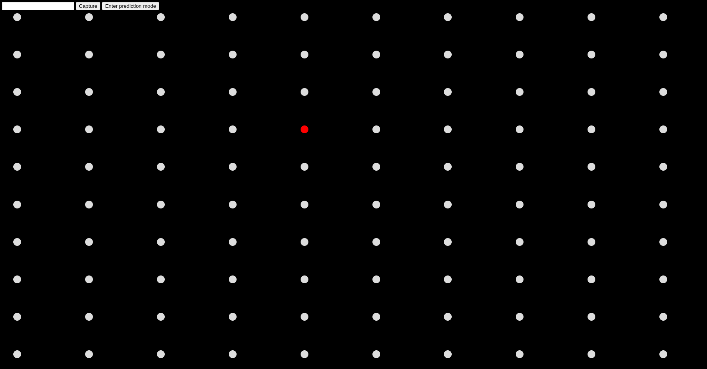
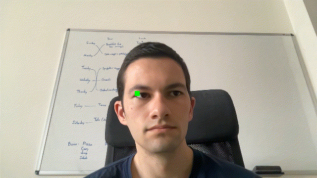

I decided to take a really cool Tensorflow library for hand tracking and build it into a browser extension that would allow me to manipulate a web browser using only gestures. I created a thin gesture driver Javascript application that runs on top of the tensorflow model and coded some simple gesture controls for moving the mouse, clicking, and scrolling. You can find instructions for installing the script in the Github repo readme.
The tool is mostly a curiosity and a lot more thought is needed to make this tool efficient and accessible, but it was an interesting experiment in a novel approach to web browsing.
I undertook a project to build a computer vision model that could take the video stream from my webcam and estimate where on the screen my eyes were looking at each moment.
I built a data collection tool that consisted of a python server running locally on my computer and which would display a webpage consisting of a grid of dots. Below is the python code that collected the data.
import time
import cv2
import re
import os
import matplotlib.pyplot as plt
import numpy
from datetime import date
def main(coordinate_string, seconds_to_capture):
todays_datestring = date.today()
if not re.match(r"[0-9]+_[0-9]+", coordinate_string):
print("That is not two integers joined by an underscore. Stopping.")
return
print("Staring collection")
# Record images for a timespan of 2 minutes
current_seconds = time.time()
stop_seconds = current_seconds + seconds_to_capture + 3
framerate_hz = 2
frame_period_s = 1 / framerate_hz
# Collect frames at a reasonably slow frame rate, downsample and crop, and save
next_frame_time = time.time() + frame_period_s
# Make an output folder if one does not exist
number_of_frames_already_collected = 0
if not os.path.exists(os.path.join("data", coordinate_string)):
os.mkdir(os.path.join("data", coordinate_string))
else:
number_of_frames_already_collected = len(os.listdir(os.path.join("data", coordinate_string)))
cap = cv2.VideoCapture(0)
number_of_frames_collected = number_of_frames_already_collected
time.sleep(3)
while current_seconds < stop_seconds:
if not cap.isOpened():
print("Capture is not opened. Skipping frame")
break
current_seconds = time.time()
if current_seconds > next_frame_time:
next_frame_time = current_seconds + frame_period_s
number_of_frames_collected += 1
# Collect a frame
ret, frame = cap.read()
if ret == False:
break
# Save Frame by Frame into disk using imwrite method
cv2.imwrite(os.path.join("data", coordinate_string, f"{coordinate_string}_{str(number_of_frames_collected)}_{todays_datestring}.jpg"), frame)
print(f"\rCollected a total of {number_of_frames_collected} frames", end="")
print()
print("Done")
if __name__ == "__main__":
main("test", 0.1)

During data collection, I programmed the screen background to randomly change color to induce a variety of reflections in my eyes so that the model would not find itself out of its training domain as soon as I started browsing on a page with lighter colors (which induced more reflections in my eyes).
I created a simple convolutional neural network to perform the task of inferring where I was looking on the screen. To start, I only produced training samples where I was looking at the center, corner, or center-edge of the screen (a total of 9 possible locations). The tracking model architecture was defined by the following code.
import torch
import torchvision.transforms as transforms
GLOBAL_DROPOUT = 0.2
class ResidualBlock(torch.nn.Module):
def __init__(self, dimension):
super(ResidualBlock, self).__init__()
self.linears = torch.nn.Sequential(
torch.nn.Linear(dimension, dimension),
torch.nn.LeakyReLU(),
torch.nn.Linear(dimension, dimension),
torch.nn.LeakyReLU(),
)
def forward(self, x):
return x + self.linears(x)
class ModelOne(torch.nn.Module):
def __init__(self):
super(ModelOne, self).__init__()
self.cnn_stack = torch.nn.Sequential(
torch.nn.Conv2d(in_channels=3, out_channels=8, kernel_size=(3, 3), stride=2),
torch.nn.LeakyReLU(),
torch.nn.BatchNorm2d(8),
torch.nn.Dropout(GLOBAL_DROPOUT),
torch.nn.Conv2d(in_channels=8, out_channels=12, kernel_size=(3, 3), stride=2),
torch.nn.LeakyReLU(),
torch.nn.BatchNorm2d(12),
torch.nn.Dropout(GLOBAL_DROPOUT),
torch.nn.Conv2d(in_channels=12, out_channels=16, kernel_size=(3, 3), stride=2),
torch.nn.LeakyReLU(),
torch.nn.BatchNorm2d(16),
torch.nn.Dropout(GLOBAL_DROPOUT),
torch.nn.Conv2d(in_channels=16, out_channels=20, kernel_size=(3, 3), stride=2),
torch.nn.LeakyReLU(),
torch.nn.BatchNorm2d(20),
torch.nn.Dropout(GLOBAL_DROPOUT),
torch.nn.Conv2d(in_channels=20, out_channels=28, kernel_size=(3, 3), stride=(1, 2)),
torch.nn.LeakyReLU(),
torch.nn.BatchNorm2d(28),
torch.nn.Dropout(GLOBAL_DROPOUT),
torch.nn.Conv2d(in_channels=28, out_channels=36, kernel_size=(3, 3), stride=2),
torch.nn.LeakyReLU(),
torch.nn.BatchNorm2d(36),
torch.nn.Dropout(GLOBAL_DROPOUT),
torch.nn.Conv2d(in_channels=36, out_channels=48, kernel_size=(3, 3), stride=2),
torch.nn.LeakyReLU(),
torch.nn.BatchNorm2d(48),
torch.nn.Dropout(GLOBAL_DROPOUT),
torch.nn.Conv2d(in_channels=48, out_channels=64, kernel_size=(3, 3), stride=2),
torch.nn.LeakyReLU(),
torch.nn.BatchNorm2d(64),
torch.nn.Dropout(GLOBAL_DROPOUT),
torch.nn.Conv2d(in_channels=64, out_channels=72, kernel_size=(3, 3), stride=2),
torch.nn.LeakyReLU(),
torch.nn.BatchNorm2d(72),
torch.nn.Dropout(GLOBAL_DROPOUT),
torch.nn.Conv2d(in_channels=72, out_channels=86, kernel_size=(3, 2), stride=1),
torch.nn.LeakyReLU(),
torch.nn.BatchNorm2d(86),
)
self.final_stack = torch.nn.Sequential(
torch.nn.Flatten(),
torch.nn.Linear(in_features=86, out_features=100),
torch.nn.LeakyReLU(),
torch.nn.Dropout(GLOBAL_DROPOUT),
ResidualBlock(100),
torch.nn.Linear(in_features=100, out_features=2),
)
def forward(self, x):
x = self.cnn_stack(x)
x = self.final_stack(x)
return x
After only a few epochs of training the validation accuracy of the model was very good. However, when I ran the model on new images from my webcam to make live predictions of where I was looking, the accuracy was terrible.
The most severe problem was how I split data into training and validation sets. I collected data at a rate of 10 Hz, but I randomly split the data among the training and validation set. This means that one image that ended up in the training set could have been taken only 0.1 seconds after an image that ended up in the validation set. In this way, the validation dataset strongly resembled images that were in the training data, The validation accuracy was high after a few epochs because, practically speaking, the model was able to train on validation data. To fix this, I started collecting validation data on entirely separate days in order to avoid creating such a tight similarity between training data and validation data.
Another challenge for the model is that each image contains a large amount of information that is not relevant to the inference (e.g. the room background). Therefore, I decided to adopt a two part model that would divide the task into two parts: Finding where the eyes are, and predicting gaze location using a cropped image that focused mostly on the eyes.
I repurposed my original model as a localization model whose job was simply to predict where my right eye was in the image. Below shows a few images and the models prediction (indicated by a green dot).

I created a second model which consisted of a convolutional module that encoded the cropped image of my eyes to a latent embedding to which the coordinates of my eyes were concatenated (so the model could use both information about the angle of my gaze and the starting point of my gaze). The second model output a prediction of the location on the screen where I was looking.
The two stage model performed considerably better and produced inferences on new data that has a mean absolute error of around 20px (about 20% the width of the screen).
These two projects represent two of my favorite experiments in computer vision that require nothing more than access to a webcam. I haven't had the time to bring either to a mature state, but as-is they provide examples of applications that I think are accessible opportunities to innovate on computer vision powered tools.